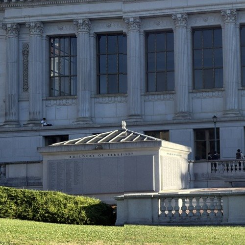
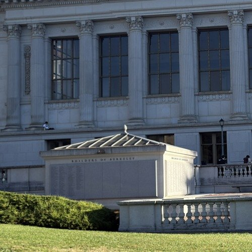

Kevin Chu · Fall 2026
Image Warping and Mosaicing
One photo can only fit so much of a scene. For this project I took overlapping photos around campus and joined them into larger images called mosaics. The challenge is that turning the camera changes how the scene looks, so I can't just place the photos next to each other. I first find how matching features move between photos, reshape the images until those features line up, and blend the overlap to hide the seams.
Part A
Image Warping and Mosaicing
Shoot the Pictures
Each pair needs an overlap: a part of the scene visible in both photos that I can use to line them up. I tried to keep the phone's lens in the same place while turning it between shots. If the camera moves sideways, nearby objects shift more than faraway ones, so the two photos can no longer be related by a single projective transform. Turning in place avoids this. I took the shots close together to limit changes in the scene. At Haas Pavilion and on Memorial Glade facing Doe Library, I turned left to right. In the eucalyptus grove I tilted upward, so the photos shown from left to right go from the ground toward the treetops.


Recover Homographies
The first step is to describe where a feature in one photo should land in the next. For example, a window corner might appear near the right edge of the left photo and near the left edge of the next photo. Those two locations are a matching pair, also called a correspondence. I record each location as pixel coordinates (x, y), with x increasing to the right and y increasing downward.
Rather than moving each feature separately, I want one rule that maps the whole image. That rule is a homography, a 3×3 matrix H that can describe perspective changes while keeping straight lines straight. It applies to a flat surface viewed from different angles, or to a scene at different depths when the camera rotates around a fixed center. The matching points let me solve for H.
A.2 Setting up the equations
H has eight numbers in it, and a point (x, y) moves to (x', y') using the formulas below. The top of each fraction shifts, rotates and stretches the point. The bottom changes across the image, so parts of the photo can shrink or grow, which is what makes the result look like a different viewing angle.
Multiplying every entry of H by the same number cancels out in the division, so I fix its bottom-right entry to 1. That leaves eight unknowns. Rearranging the two coordinate equations makes each matching point pair give two linear equations:
Each pair supplies two equations, so at least four well-spread pairs are needed for the eight unknowns. My computeH(im1_pts, im2_pts) puts all the pairs into one system. Here, \(\boldsymbol{\theta}\) holds the eight unknown entries of H, while A and \(\mathbf{b}\) contain the clicked coordinates:
With extra pairs, small clicking errors usually mean no H satisfies every equation exactly. Least squares finds the entries that minimize the total squared equation error, using all the pairs together. Inaccurate clicks can still hurt the fit.
A.2 Correspondences
For every pair of neighboring photos I clicked matching points across the overlap, where the same number marks the same spot in both photos. I picked sharp corners on things that don't move, like window frames, banner edges, the roofline, and knots and forks on the tree trunks, and spread them out so the fit holds across the whole overlap instead of just one area. For Doe, I later refined the clicked locations with local image matching and removed unreliable matches to reduce offsets at the seams. The homographies still use the same least-squares solver.


A.2 System of equations and recovered homography
Here is a numerical example for Haas. The first point I clicked goes from about (835.73, 1034.60) in the left photo to (167.88, 995.00) in the right photo. Substituting those coordinates into the equations produces the first two rows below, and the next pair produces the next two rows. The full system stacks the rows from every pair, and the recovered H maps the left photo into the right photo's view.
First four rows of A and first four entries of \(\mathbf{b}\)
Recovered homography, using all matching pairs
The other pairs use the same equations with their own clicked points. Each H below maps the first photo of the pair into the second.
Doe Library, left to middle and middle to right
Eucalyptus grove, bottom to middle and middle to top
Warp the Images
A.3 Inverse warping
H tells me where points move, but a photo also needs a color at every pixel in the new image. Warping is the step that builds that image. If I send each original pixel forward through H, some output pixels can be skipped when the image stretches. Instead, I work backward. I first push the image's four corners through H to find how big the output needs to be, and then for every output pixel I apply \(H^{-1}\) to see where it came from in the original. This visits every output pixel, avoiding gaps caused by pushing source pixels forward. Output pixels whose source falls outside the original have nothing to show, so I keep an alpha mask that marks them as empty, which later lets the mosaic ignore them instead of blending in black.
The source location may be something like (100.3, 80.7), between pixels rather than at a stored color. Interpolation means estimating the color at that location, and I wrote two versions from scratch. warpImageNearestNeighbor rounds to the closest pixel. warpImageBilinear takes the four pixels around the point and blends them, giving more weight to whichever ones are closer.
A.3 Rectification
Before joining photos, I tested the warp on a simpler problem: making an angled view of a flat rectangle look straight on. This is rectification. I clicked four corners on the walkway and on one flat section of the Valley Life Sciences Building, then used computeH to map those corners to an upright rectangle. The destination gives me a view from above the walkway or in front of the wall. Features outside that plane may still look distorted, so I crop around the selected rectangle.


The destination rectangle's proportions matter too, since making every selection a square would squash or stretch what's inside it. So I gave each one a width-to-height ratio matching the object, a long thin strip for the walkway and a slightly wide rectangle for the wall. The results straighten the rows of bricks and the window frames.
A.3 Nearest neighbor vs. bilinear
At full size the two results look almost the same, so here is a close-up of the same spot in each. Nearest neighbor is faster since it reads just one pixel, but edges come out jagged and blocky because neighboring output pixels jump between whole source pixels. Bilinear reads four pixels and does a bit of math for each, which takes about twice as long, but the brick lines and window frames stay smooth. The extra time is small next to the better quality, so I used bilinear for everything after this.


Blend the Images into a Mosaic
A.4 Procedure
Rectification maps a photo into a view I define myself. A mosaic uses the same warp, but the destination is another photo's view. For Doe and the grove, I keep the middle photo fixed and bring the two outer photos into its coordinates. If H maps the left photo to the middle, I use H directly; if H maps the middle to the right, I use its inverse to bring the right photo back to the middle. For the two-photo Haas set, the right photo stays fixed. Transforming all the corners gives me one canvas large enough to hold the images, including the parts outside the reference photo.
A.4 Reducing edge artifacts
The photos now share coordinates, but the overlap still contains more than one possible color at each pixel. Blending decides how to combine them. Just pasting the photos on top of each other can leave a visible seam where one photo ends, since the brightness changes a little between shots. To fade between them, every photo gets a weight that is highest at its center and drops to zero at its edges, and I warp that weight right along with the photo. A weighted average then blends the photos smoothly, but wherever the alignment is slightly off, it shows the detail from both photos at once, so things look soft or doubled.
To reduce this softness while keeping a smooth fade, I split each warped photo into a blurry low-frequency band and a sharp high-frequency band. The low band holds the overall color and brightness, so I blend it with the weighted average to hide the seam. The high band holds the edges and texture, so for each pixel I take it only from the photo with the biggest weight there, which keeps details from being averaged into ghosts. Adding the bands back together keeps more detail while smoothing brightness changes. It doesn't fix incorrect alignment, and switching between high-frequency bands can still leave artifacts. Here is the same spot on one of the Doe seams with each method.


A.4 Mosaics
Here are the three mosaics with their source photos, all blended with the two-band method. The slanted outlines are the boundaries of the warped photos. Black regions lie outside every photo, so they contain no image data. The outer views can stretch because I am fitting a wider scene onto the reference photo's flat image plane; I kept those boundaries visible to show the full result.
Haas Pavilion

Doe Library

Eucalyptus grove

What I learned
The most surprising part for me was how much a single 3×3 matrix can do, from straightening a building to stitching a whole panorama. It also showed me how much the input matters. Clicking points carefully and turning the phone without moving it made a bigger difference than anything fancy in the blending.